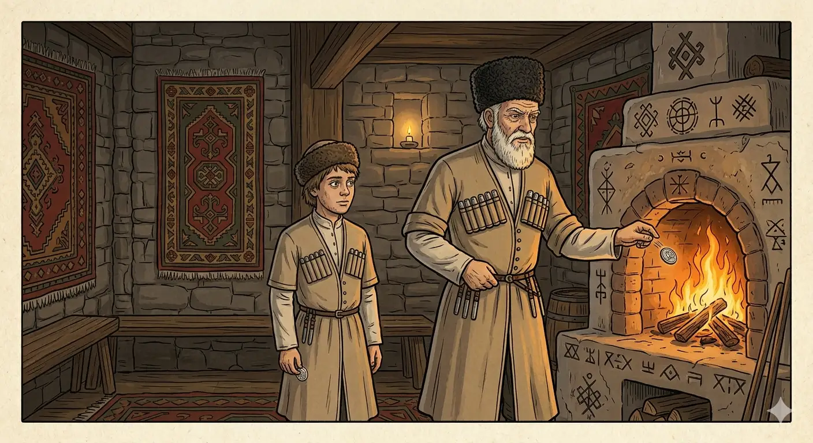

И.А. Дахкильгов. Хьехаме дувцарш - поучительные рассказы-притчи.
И.А. Дахкильгов. Хьехаме дувцарш - поучительные рассказы-притчи. Из ингушского фольклора.

Ший хьоцарца даьккхар дезагӀа да
Цхьан даь мекъа воӀ кхувш хиннав. Во тӀехье цох хилар кхераш, цкъа дас аьннад цунга: "Тахан миччахьа болх бий а, моллагӀа хӀама дий а, сом-кепиг доацаш укха цӀагӀа ма велла!" Массе хана санна эйла юкъе а лийна, чувенача воӀо къайлагӀа сом дийхад наьнагара. Из дӀаденнад даьна. Дас из сом шийна хьалха боагача кхуврчала дахийтад, тӀаккха воӀагахьа дӀахьежав. Вож хӀаманна шек а хиннавац. ШоллагӀча дийнахьа вешийгара, кхоалагӀча дийнахьа йишийгара доахаш, даьна дӀалуш, дас уж цӀерала кхувсаш, воӀо хӀама ца оалаш лаьттад гӀулакх. ТӀеххьар, согеи согеи дац хьона тела сомаш, аьнна, дӀатеттав из. Кхы де хӀама доацаш, ваха хьунагӀара даьккха дахча дахьаш а вена, из наха дӀа а дехка, сом дахьаш венав ер даьна хьалха. Халла даьккха хинна сом а дас цӀералла дӀалостадеш, воӀо даь кулг лаьцад. - Фу де воал хьо, дади! - аьннад, - деррига дегӀ даццалца Ӏурден сарралца аз къахьийга даьккха сом Ӏа ма чӀоагӀа атта цӀерала кхосс! Циггач хийнад даьна, шийна лейча, воӀо къахьегаргдолга.
РУССКИЙ
Самим заработанное дороже
У некоего отца вырос сын-лентяй. Как-то отец сказал ему: "Где хочешь поработай, что можешь сделай, но без рубля-копейки домой не возвращайся". Лентяй, как обычно, прогулял весь день. Вечером он тайно выпросил у матери рубль и отдал его отцу. Отец тут же кинул его в очаг, но сын и бровью не повел. На второй день лентяй выпросил у брата, на третий - у сестры, а отец все кидал и кидал рубли в огонь. Вскоре домочадцы отказали лентяю в деньгах. Не видя другого выхода, лентяй где-то в лесу нарубил дров и продал их. Заработанный рубль он отдал отцу. А тот, как всегда, - его в огонь. Сын кинулся руками разгребать жар и воскликнул: - Я весь день трудился, все кости ломит из-за этого рубля, а вы его так запросто в огонь швыряете! Отец, разве можно так делать! Тогда-то отец и понял, что его сын, если он того захочет или нужда заставит, сможет себя прокормить.
ENGLISH
What you earn yourself is worth more
A certain father had a lazy son. One day, the father said to him: 'Work wherever you like, do whatever you can, but don't come home without a single rouble or kopeck.' The lazybones, as usual, spent the whole day loafing about. That evening, he secretly begged a rouble from his mother and gave it to his father. His father immediately threw it into the hearth, but the son didn't bat an eyelid. On the second day, the lazybones begged his brother for a rouble; on the third, his sister; and his father kept throwing roubles into the fire. Soon, the family refused to give the lazybones any more money. Seeing no other way out, the lazybones chopped some firewood somewhere in the forest and sold it. He gave the rouble he'd earned to his father. And his father, as always, threw it into the fire. The son rushed to rake through the embers with his hands and exclaimed: 'I've been toiling all day, my bones ache from the strain of earning that rouble, and you just toss it into the fire so casually! Father, how can you do that!' It was only then that the father realised that his son, if he so wished or if necessity compelled him, would be able to provide for himself.
НОХЧИЙН
Шен хьацарца даьккхинарг дезах ду
Цхьана ден мела воӀ кхуьуш хилла. Вон тӀаьхье цунах хиларна кхоьруш, цкъа дас аьлла цуьнга: "Тахана миччахьа болх бай а, муьлху хӀума дай а, сом-кепек доцуш хӀокху цӀа ма воьллахь!" Массо хенахь санна ойла йуккъе а лелла, чувеъначу воӀа къайлах сом дехна ненегара. Иза дӀаделла дена. Дас и сом шена хьалха богучу кхерче дахийтина, тӀаккха воӀе дӀахьажна. Важа хӀуманна шек а хилла вац. ШолгӀачу дийнахь вешегара, кхоалгӀачу дийнахь йишегара дохуш, дена дӀалуш, дас уьш цӀерала кхуьйсуш, воӀо хӀума ца олуш лаьттина гӀуллакх. ТӀаьххьара, согаххьий соьгаххьий дац хуьна тела соьмаш, аьлла, дӀатеттина иза. Кхин дан хӀума доцуш, ваха хьуьнара даьккхина дечиг дохьуш а веана, иза нахана дӀа а доьхкина, сом дохьуш веъна хӀара дена хьалха. Халла даьккхина хилла сом а дас цӀералла дӀаластадеш, воӀа ден куьг лаьцна. - ХӀун дан воллу хьо, дади! - аьлла, - дерриге дегӀ дацийна Ӏуьйранна сарралца ас къахьегна даьккхина сом ахь ма чӀогӀа атта цӀерала кхуссу! Циггахь хиъна дена, шена лиъча, воӀа къахьегардолий.
ПОГОВОРКИ
АргӀа йоацаш кхихьа йорт йоал йоацаш йисай. Беспутно проведенное время добра не приносит. Time spent aimlessly brings no good. РагӀ йоцуш кхехьна йорт йал йоцуш йисна.Атта Ӏоадаь рузкъа михо дӀадихьад. Легко нажитое добро ветер унес. Wealth easily gained was easily carried off by the wind. Атта ӀаӀийна рицкъ мохо дӀадаьхьна.Къахьегаш даьккхар бийна юкъе доал, атта кхаьчар тӀаьр юкхе ул. Трудом добытое крепко зажато в кулаке; то, что досталось легко, лежит на открытой ладони. Wealth won by hard work is clenched tight in the fist; wealth that came easily lies loose on an open palm. Къахьоьгуш даьккхинарг буйна йуккъе доллу, атта кхаьчнарг тӀаран йуккъе доллу.Лаьтт хьийкъа хургдолаш хьацара тӀадам божо беза цунна тӀа. Чтобы земля стала плодородной, ее надо полить хотя бы каплей пота. For the soil to become fertile, it needs at least a drop of your own sweat. Латта хьекъа хирдолуш, хьацаран тӀадам божо беза цунна тӀе.Нанас воӀ кхеву, дас цох къонах ву. Мать сына вскармливает, отец делает из него мужчину. The mother raises the son; the father makes a man of him. Нанас воӀ кхиаво, дас цунах къонах во.Наха ду хӀама атта хет, ше деш дар боча хет. К тому, что сделано другими, относятся легко, то, что делают сами, ценят высоко. What others have made seems easy; what one makes oneself is valued highly. Наха до хӀума атта хета, ша деш дерг боча хета.Нахагара даьккхача сомал дезагӀа да къахьегаш даьккха шей. Трудом добытый пятак дороже одолженного рубля. A coin earned through one's own labour is worth more than a ruble borrowed from another. Нахера схьаэцна сомал дезах ду къахьоьгуш даьккхина шай.Овла боацаш буц тӀаяьлац, хало йоацаш оатто хилац. Без корней трава не растет, без труда не бывает достатка. Without roots, grass will not grow; without labour, prosperity does not come. Орам боцуш буц тӀейалац, хало йоцуш аьтто хилац.Рузкъах хам бергбац, хьацарца из Ӏоа ца дича. Богатства не ценит тот, кто не добыл его своим потом. One who has not earned wealth through their own sweat does not truly value it. Рицкъанах хам бир бац, хьацарца иза ӀаӀа ца дича.Сом ца латача гаьна тара ва цхьаккхача хӀаманна пайданавоацар. Никчемный бездельник подобен бесплодному дереву. A worthless idler is like a barren tree, of no use to anyone. Стом ца летачу диттах тера ву цхьанне хӀуманна пайден воцург.Ший хьакъаца даь хӀама боча хул. К сделанному своим трудом человек относится бережнее. One takes better care of what was made through their own labour. Шен хьекъалца дина хӀума боча хуьлу.Ше даь хӀама бочагӀа да. Сделанное самим кажется милее. What one has made oneself always seems dearer. Ша дина хӀума дезах хета.“Ӏурден сарралца болх ца бе, яь худар дуаргдар аз”, - яхад мекъачо. “Лучше съесть котел каши, чем весь день работать”, - говорил лентяй. "Better to eat a whole pot of porridge than work all day," said the lazy man. "Ӏуьйранна сарралца болх ца бан, яй худар дуур дар ас», - аьлла малончас.